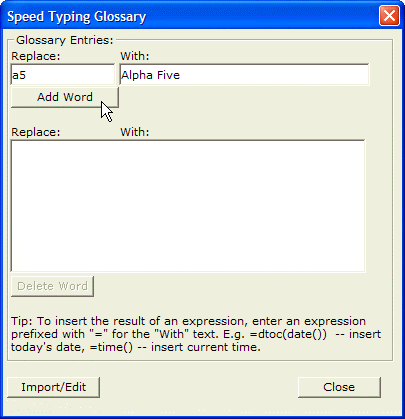
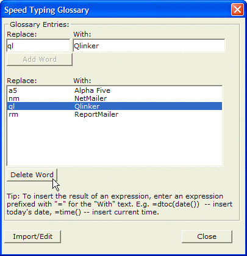
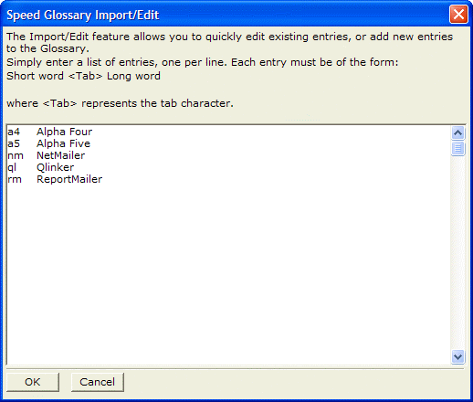
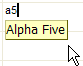

Speed Typing
Speed typing is a shortcut for entering frequently used values. The speed typing glossary, A_GLOSS.DBF, is initially empty. You can expand and maintain your glossary as you work, so it contains data values you use often.
 Note : The A_GLOSS.DBF
table is stored in the shared folder. The location of the shared folder
is set in the View > Settings > Directories
dialog. If you have multiple users on a network and you want them all
to use the same A_GLOSS.DBF file, simply set each user's shared folder
to the same network location.
Note : The A_GLOSS.DBF
table is stored in the shared folder. The location of the shared folder
is set in the View > Settings > Directories
dialog. If you have multiple users on a network and you want them all
to use the same A_GLOSS.DBF file, simply set each user's shared folder
to the same network location.
To use the Speed Typing Glossary, select Tools > Speed Glossary on the form or browse menu bar.

To add words to the Speed Glossary:
Enter the short form of the entry in the Replace: text box.
Enter the long form in the With: text box.
Click Add Word. Note that words are limited to a maximum of 30 characters.
To remove words from the Speed Typing Glossary :

Select the word you want to remove.
Click the Delete Word button.
Editing the Speed Typing Glossary
When editing Speed Typing Glossary, clicking the Import/Edit button brings up a dialog that shows all of the entries in the glossary in a format that lends itself to quick editing. Each glossary entry is shown on its own line with a tab between the short and long Form. You can add multiple entries at once to this dialog box, or you can delete multiple existing entries at once.

When entering data, as soon as you type the short form of an entry, Alpha Anywhere displays Bubble Help of the long form. Picture
{kind=link}

You can then press Enter to accept the long Form.
You can make the long form of a speed typing entry an expression. For example, you could define the following short form entry: d1, and the corresponding long form entry: ="Today is:"+dtoc(date()). When the user typed "d1", "Today is: 12/10/99" would be displayed as bubble help. If the user then pressed Enter the long form would be accepted. Any long form entry prefixed with an equals sign is presumed to be an expression.